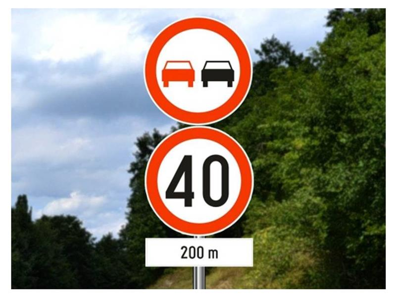
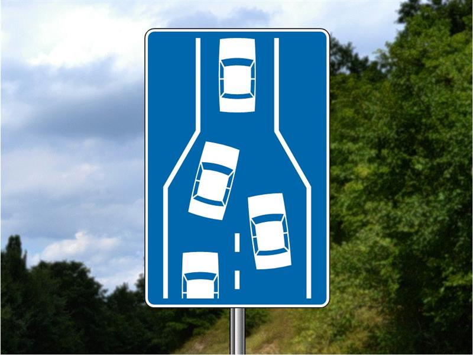

Типы знаков, расстояния, зоны и смысл дополнительных табличек.
Что относится к сигнализации
Saobraćajna signalizacija должна передавать ясное и однозначное сообщение: водитель замечает его, понимает и действует согласно ему. Это более широкое понятие, чем saobraćajni znakovi — дорожные знаки. Лектор отдельно перечисляет разметку на проезжей части и тротуаре, светофоры, световые дорожные обозначения, шлагбаумы на переездах, временную сигнализацию при работах. Жесты полицейского рассматриваются отдельно. 7 · фр. 8–9.
| Группа |
Сербская формулировка |
Смысл |
| Предупреждающие |
Znakovi opasnosti |
Заранее предупреждают об опасном месте; обычно треугольник |
| Предписания |
Znakovi izričitih naredbi |
Запреты, ограничения и обязанности; обычно круг |
| Информационные |
Znakovi obaveštenja |
Дают сведения для движения и ориентирования; форма различается |
В группе izričite naredbe различай zabrana / ograničenje — запрет / ограничение, обычно белый круг с красной каймой, и obaveza — обязанность, обычно синий круг с белым символом. Красный круг «40» — максимум 40 км/ч; синий круг «40» — обязательная минимальная скорость 40 км/ч в условиях действия знака. Это разные сообщения. 7 · фр. 10–16.
Лектор обобщает информационные знаки как «неопасные, без штрафа за несоблюдение». Так запоминать нельзя: к этой группе он сам относит главную дорогу, начало населённого пункта и зоны. Их сведения влияют на действующие правила. Фраза о том, что все информационные знаки не согласованы между странами, также чрезмерно широка. 7 · фр. 17–20.
Расстояния и начало действия
Предупреждающий знак по общему правилу стоит за 150–250 м до опасного места. В лекции это объясняется для дороги вне населённого пункта. Банк B различает два исключения:
- Van naselja: при расстоянии менее 150 м или более 250 м нужна табличка с расстоянием до опасного места — вопрос 10782.
- U naselju: предупреждающий знак ближе 150 м может быть без такой таблички — 8952. Названные лектором 10–15 м — его объяснение размещения в городе, а не универсальная нормативная дистанция.
Источник: 7 · фр. 51–52. Nailazak / približavanje — приближение к месту; mesto — само место. Это полезное различие в вариантах ответа, но не правило «каждый треугольник всегда означает только приближение»: в конце лекции отдельно разбираются начало двустороннего движения и обозначения переезда. 7 · фр. 53–61.
Предписание обычно действует от места установки, а не от момента, когда водитель увидел знак (банк 10612). Лектор противопоставляет обычное ограничение, действующее до ближайшего перекрёстка при обсуждаемых условиях, и zonа 30: зону не отменяет каждый перекрёсток, она продолжается до знака конца зоны. Не переносить это объяснение на все знаки и все способы окончания их действия. 7 · фр. 20.
Дополнительная табличка
Dopunska tabla — составная часть знака, уточняющая его значение. Она относится к знаку, непосредственно под которым установлена, а не ко всем знакам на одной стойке. 7 · фр. 25, 50–51.
| Что на табличке |
Как читать |
| «200 m» без боковых стрелок |
Udaljenost: до начала действия остаётся 200 м |
| «200 m» с боковыми стрелками |
Dužina dela puta: протяжённость участка действия 200 м от знака |
| Схема перекрёстка с толстой линией |
Pružanje puta sa prvenstvom prolaza: как проходит главная дорога |
В примере «запрет обгона → ограничение 40 → табличка 200 м» табличка уточняет только ограничение скорости: оно начнётся через 200 м, запрет обгона уже действует. В другом речевом примере встречаются 2000 м — это длина показанного участка, не постоянное значение таблички. 7 · фр. 10, 25–26. Карточки 9010/9011 с разницей стрелок остаются также в теме дорог и зон.
Приоритет, STOP и практический экзамен
Ustupanje prvenstva prolaza, перевёрнутый треугольник: уступить тем, кто имеет приоритет; остановиться, если это нужно для пропуска. STOP / obavezno zaustavljanje: полностью остановиться даже при пустом перекрёстке. Put sa prvenstvom prolaza, жёлтый ромб: главная дорога. Особая форма помогает распознать эти знаки с обратной стороны; проверять всё равно нужно сигнализацию своего подъезда. 7 · фр. 11–14.
Практический акцент лектора: stati — остановиться; медленное прокатывание, которое кандидат называет zastao sam, полной остановкой не является. После остановки на учебной машине он требует первую передачу для трогания. «Досчитать до трёх» — его способ убедиться, что машина стоит, а не установленное здесь правило обязательных трёх секунд. Привычка «первой трогаться, второй поворачивать, третьей ехать» — учебная подсказка для показанной машины и маршрутов, не универсальный выбор передачи. 7 · фр. 12–14.
На сужении красный круг с двумя стрелками требует уступить встречному потоку, синий прямоугольник сообщает преимущество перед встречными. Синий знак naizmenično uključivanje vozila показывает поочерёдное слияние полос. Сам знак кругового движения задаёт направление объезда островка; порядок проезда определяется отдельно — см. приоритет. 7 · фр. 16–19.
Как различать изображения и слова
- Pešački prelaz: треугольник предупреждает о переходе впереди; синий квадрат указывает место перехода; синий круг pešačka staza — пешеходная дорожка. Знак «дети» не равен началу zone škole. 7 · фр. 54–55.
- Uspon / nizbrdica — подъём / спуск: на изображении склон читают слева направо. Izbočina / ulegnuće — выпуклость / впадина; обе вместе — неровный участок. Prštanje kamenja — выброс щебня из-под колёс; odron kamenja — обвал со склона; neutvrđena bankina — неукреплённая обочина. 7 · фр. 53–54, 61.
- Bočni vetar — боковой ветер; divljač / domaće životinje — дикие / домашние животные. Ukrštanje / spajanje — пересечение / примыкание; pod pravim / oštrim / tupim uglom — под прямым / острым / тупым углом. В схеме примыкания смотреть сторону и форму главного пути. 7 · фр. 56–60.
- Železnička pruga / tramvajska pruga — железнодорожный / трамвайный путь; branici / polubranici — шлагбаумы / полушлагбаумы; kolosek — путь. На подходе к железнодорожному переезду полосатые щиты отсчитывают 240 / 160 / 80 м: три / две / одна полоса. Андреевский крест различает один и два или более путей. 7 · фр. 59–61.
Указатели направлений в лекции: зелёный фон для автомагистрали, синий для motoput, жёлтый для остальных обсуждаемых дорог; коричневый для туристических и культурных объектов. Различай схему направлений, указание назначения полос и potvrda pravca — подтверждение направления с расстояниями после перекрёстка. Цвет указателя сам по себе не заменяет знак типа дороги или ограничения скорости. Названные размеры щитов 1,20 × 0,80 м / 0,80 × 0,50 м — примеры лектора, не полная таблица размеров. 7 · фр. 21–25.
Znakovi sa izmenljivim sadržajem poruka — знаки с переменным сообщением: могут включаться по необходимости и быть постоянно включёнными; новое изображение должно соответствовать предусмотренному знаку. Совет лектора выбирать «mogu» вместо «moraju» нельзя применять ко всем тестовым вопросам: решает конкретное правило. 7 · фр. 24, 48–50.
Проверь себя
Вопросы банка B по теме. Сначала реши сам, затем открой перевод или разбор.
B · 8952
3 балл(а) · правильных ответов: 1
Znak opasnosti koji je postavlјen na putu u naselјu na udalјenosti manјoj od 150 m ispred opasnog mesta:
- mora imati dopunsku tablu na kojoj je naznačena vrsta opasnosti
- mora imati dopunsku tablu na kojoj je naznačena udalјenost do opasnog mesta
- ne mora imati dopunsku tablu
Перевод вопроса
Нужна ли табличка у предупреждающего знака в населённом пункте, если до опасности менее 150 м?
Ответ и ловушка
Правильный ответ: 3.
По-русски: Может не иметь дополнительной таблички.
Городское исключение для таблички расстояния
Ловушка: Не переносить загородное условие на город. Здесь важны u naselju и менее 150 м.
Слова в вопросе: u naselju; manjoj od 150 m; ne mora.
B · 10782
3 балл(а) · правильных ответов: 1
Znak opasnosti koji je postavlјen na putu van naselјa na udalјenosti manјoj od 150 m ili većoj od 250 m ispred opasnog mesta na putu:
- mora imati dopunsku tablu kojom se označava udalјenost do opasnog mesta
- ne mora imati dopunsku tablu
- mora imati dopunsku tablu kojom se označava vrsta opasnosti
Перевод вопроса
Что нужно у предупреждающего знака вне населённого пункта, если до опасности меньше 150 или больше 250 м?
Ответ и ловушка
Правильный ответ: 1.
По-русски: Табличка с расстоянием до опасного места.
Вне города при нетипичном расстоянии табличка обязательна
Ловушка: Уточняется расстояние, а не вид опасности. Границы сформулированы строго: <150 или >250 м.
Слова в вопросе: van naselja; manjoj od 150 m ili većoj od 250 m; udaljenost.
B · 9203
2 балл(а) · правильных ответов: 1
U situaciji prikazanoj na slici dopunska tabla je sastavni deo:

- saobraćajnog znaka „Ograničenјe brzine“
- oba saobraćajna znaka
- saobraćajnog znaka „Zabrana preticanјa svih motornih vozila, osim motocikala bez prikolice“
Перевод вопроса
К какому знаку относится табличка 200 м на изображении?
Ответ и ловушка
Правильный ответ: 1.
По-русски: К ограничению скорости.
Табличка относится только к нижнему знаку
Ловушка: Табличка непосредственно под знаком 40. Она не переносит начало запрета обгона на 200 м и не относится сразу к обоим знакам.
Слова в вопросе: dopunska tabla je sastavni deo; Ograničenje brzine.
B · 10941
2 балл(а) · правильных ответов: 1
Saobraćajni znak prikazan na slici označava:

- mesto gde se, zbog završavanјa saobraćajne trake, suženјa kolovoza, odnosno smanјenјa broja saobraćajnih traka, vozila naizmenično uklјučuju u jednu saobraćajnu traku
- nailazak na deo puta na kome postoji opasnost od stvaranјa kolone vozila
- približavanјe delu puta na kome suženјe kolovoza može da predstavlјa opasnost
Перевод вопроса
Что обозначает синий знак со сходящимися полосами и автомобилями?
Ответ и ловушка
Правильный ответ: 1.
По-русски: Место поочерёдного включения автомобилей в одну полосу из-за окончания полосы, сужения или уменьшения числа полос.
Поочерёдное слияние не просто предупреждение о сужении
Ловушка: Информационный знак обозначает порядок слияния, а не просто риск затора или приближение к сужению.
Слова в вопросе: naizmenično uključuju; završavanje saobraćajne trake.
B · 10612
3 балл(а) · правильных ответов: 1
Naredba izražena saobraćajnim znakom izričite naredbe važi od:
- trenutka kada je vozač uočio taj znak
- mesta na kome je postavlјen taj znak
- 150 m od mesta na kome je postavlјen taj znak
Перевод вопроса
Откуда действует предписание дорожного знака?
Ответ и ловушка
Правильный ответ: 2.
По-русски: От места установки знака.
Предписание начинается у знака
Ловушка: Вариант «когда водитель заметил» не задаёт начало действия; 150 м относятся к другой логике предупреждающих знаков.
Слова в вопросе: mesta na kome je postavljen taj znak.